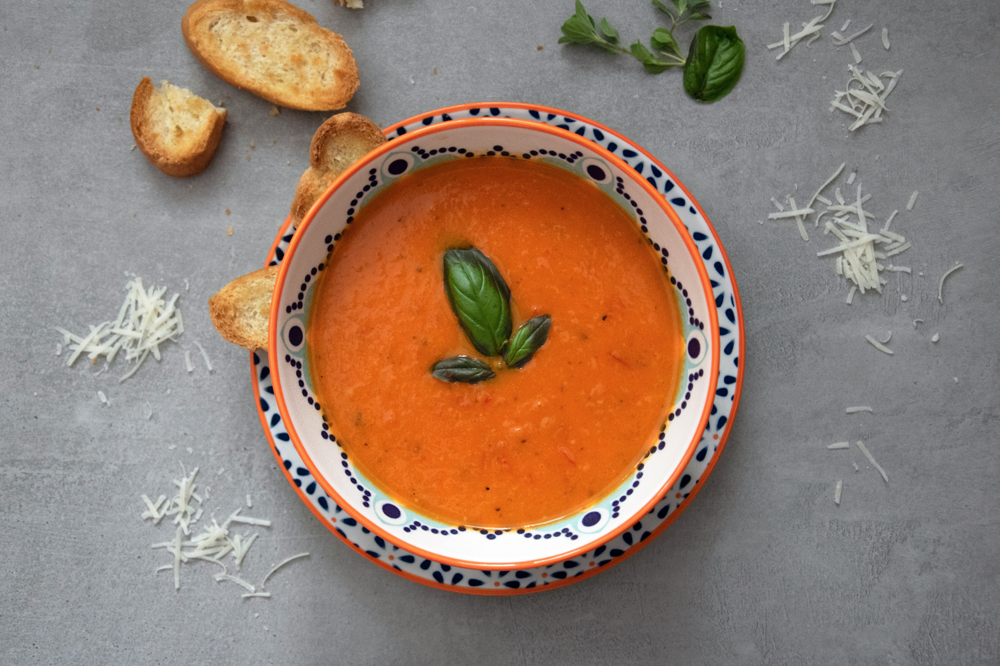

Back to the Odin Recipes.
Tomato Soup

Description
A pot of homemade tomato soup is always a good idea—especially when there’s a grilled cheese sandwich waiting on the side.
This homemade tomato soup recipe transforms simple ingredients into a nourishing bowl of goodness.
Ingredients
For the soup
- 4 tablespoons extra-virgin olive oil
- 5 tablespoons unsalted butter, divided
- 3 medium yellow onions, chopped (about 3½ cups)
- 3 large cloves garlic, minced
- ¼ cup all-purpose flour
- 6 cups chicken broth
- 2 (28-oz) cans whole peeled tomatoes
- 2 tablespoons sugar
- ½ teaspoon dried thyme
- Salt
- Freshly ground black pepper
For Serving (Optional)
- Fresh chopped basil
- Croutons
- Freshly grated Parmigiano-Reggiano
Steps
- In a large nonreactive pot, heat the olive oil and 2 tablespoons of the butter over medium-low heat. When the butter is melted, add the onions and cook over medium heat, stirring occasionally, until soft and translucent. Do not brown; reduce heat if necessary. Add the garlic and cook for a few minutes more, stirring to be sure garlic does not burn. Add the flour and continue cooking and stirring for 1 to 2 minutes more.
- Add the chicken broth, tomatoes, sugar, thyme, 1¼ teaspoons salt and ½ teaspoon pepper. Bring to a simmer over medium-high heat while stirring to make sure that the flour is not sticking to the bottom or sides of the pan. Reduce the heat to low, cover the pan, and simmer for about 40 minutes.
- Using a hand-held immersion blender, purée the soup until very smooth. (Alternatively, let the soup cool slightly and purée in batches in a blender. Be sure to crack the lid or remove the center cap to allow steam to escape.) Taste and adjust seasoning with salt and pepper. Stir in the remaining 3 tablespoons of butter. Ladle the soup into bowls and garnish with fresh basil, croutons, and Parmigiano-Reggiano, if desired.